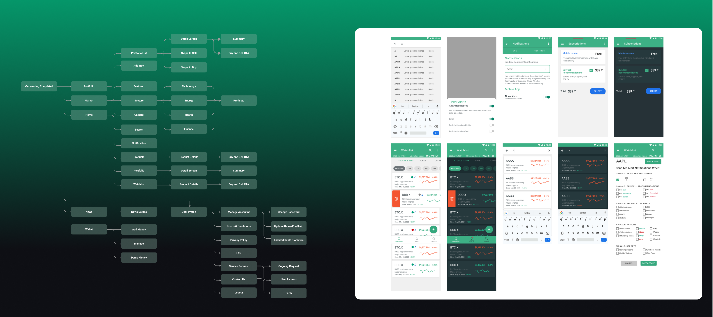
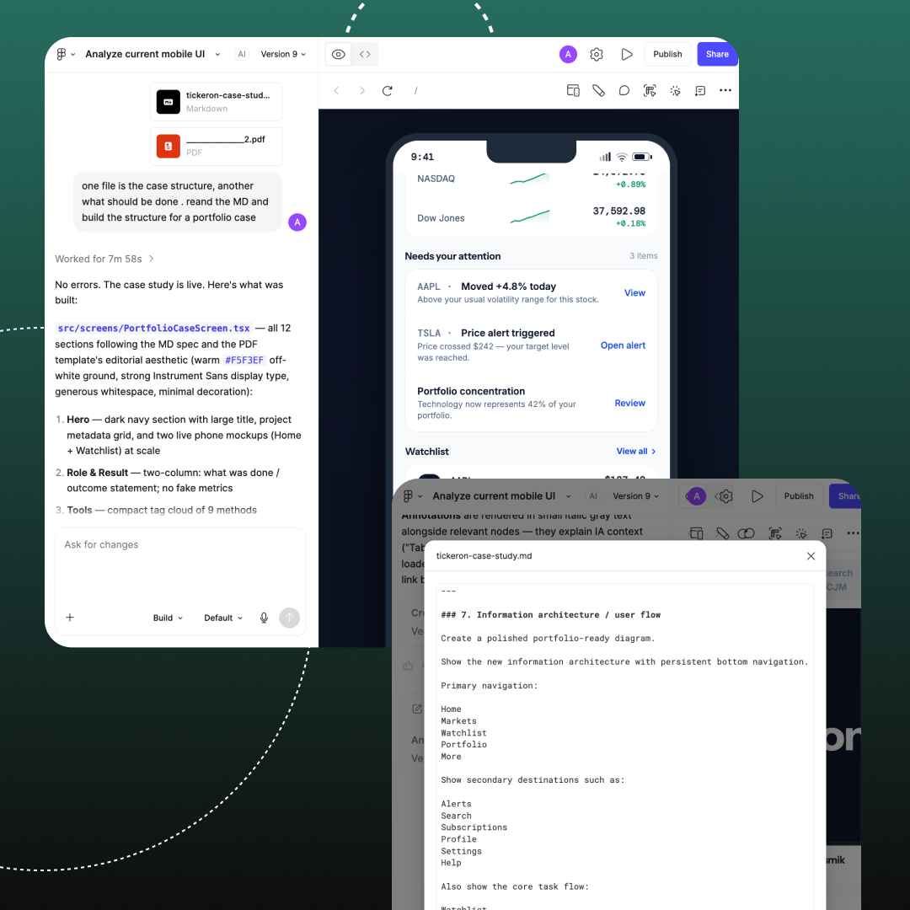
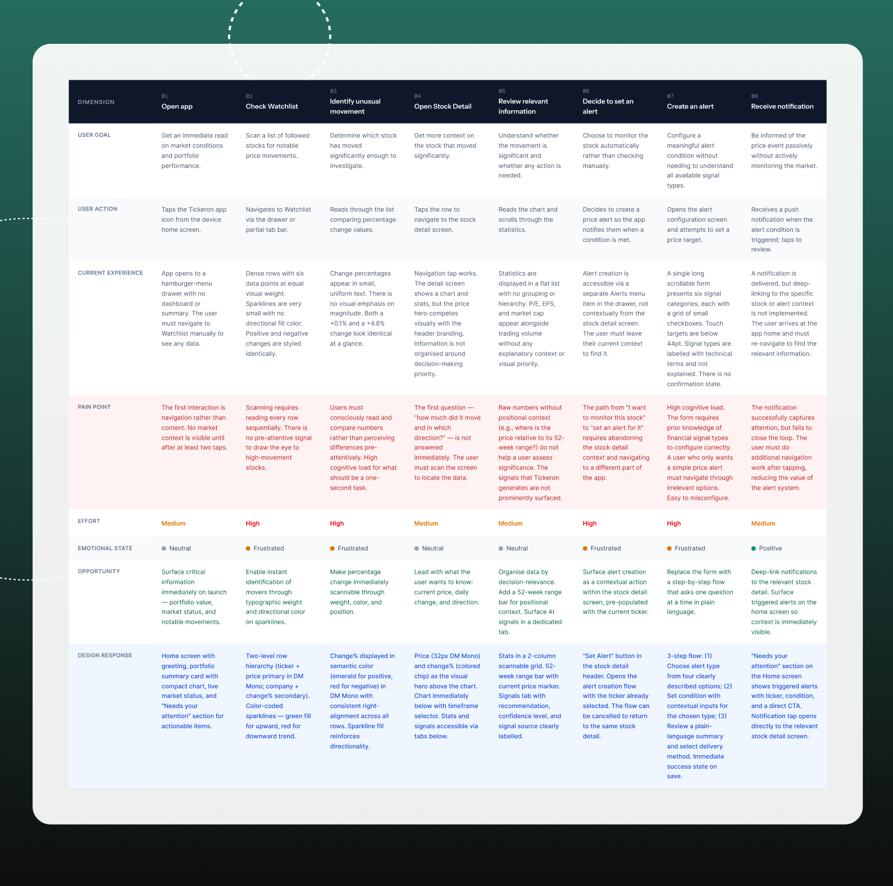
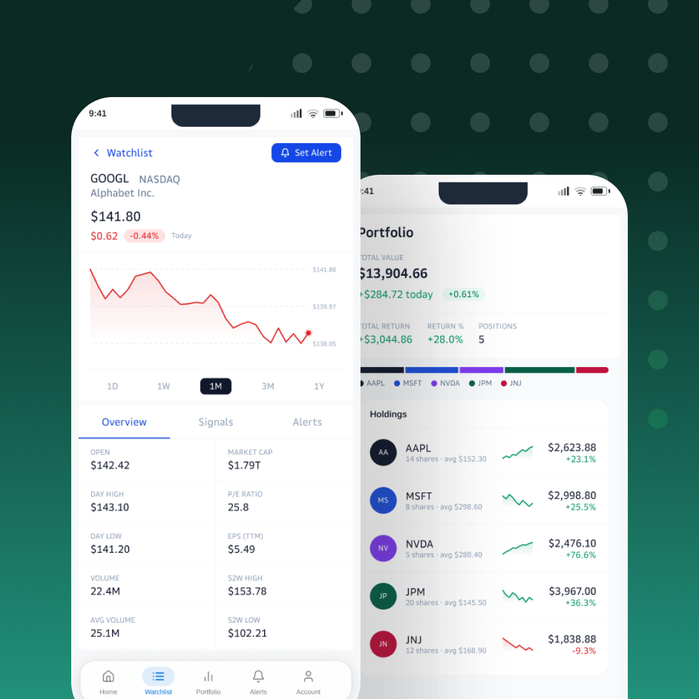
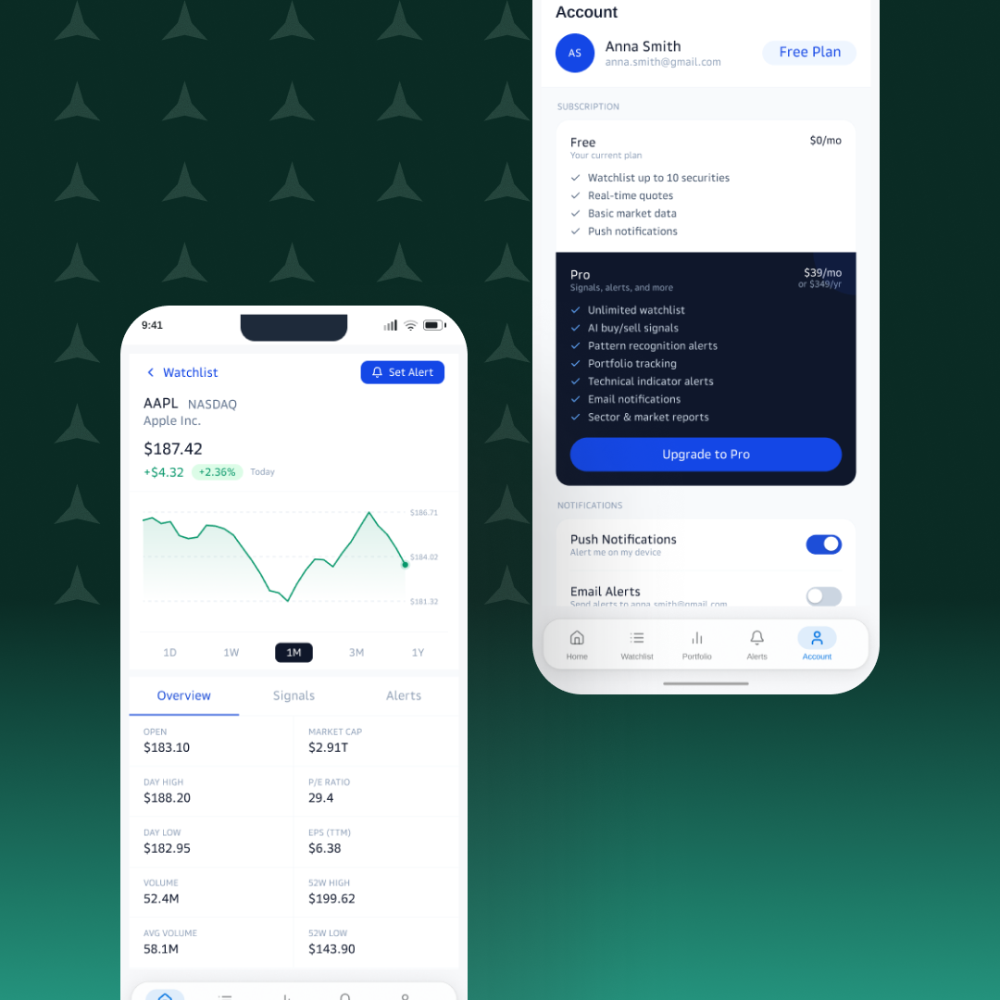
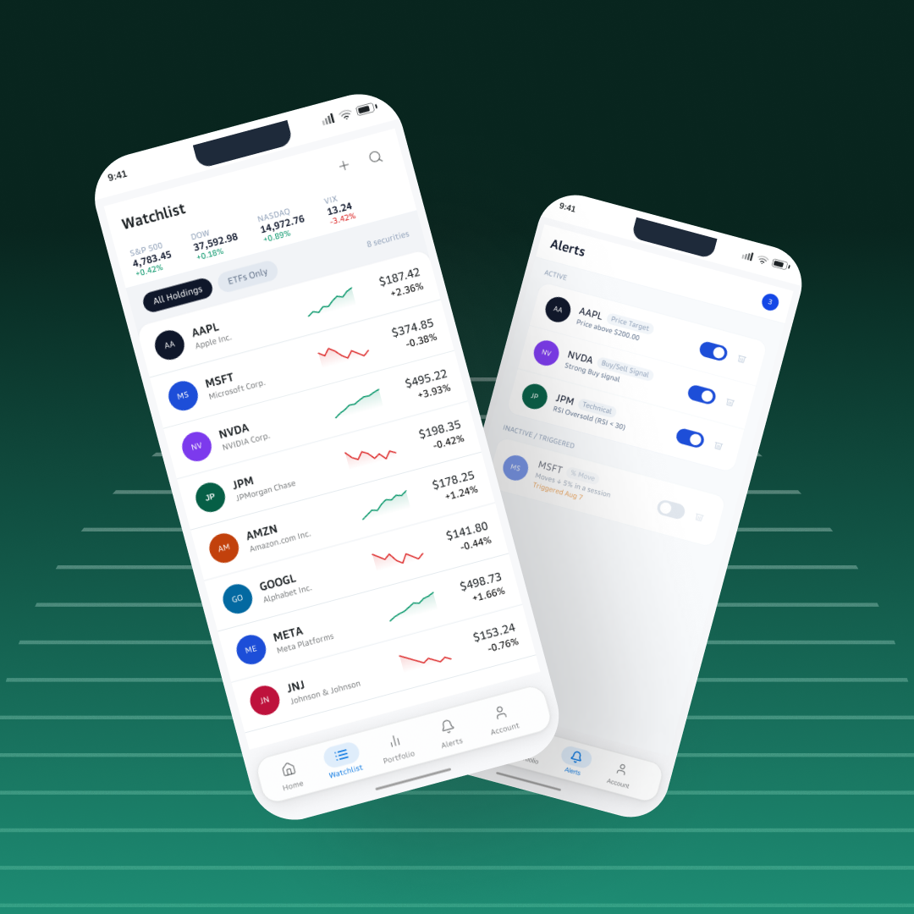

How user drop-off led us to redesign the entire mobile experience.
Using research, AI-assisted documentation, and a reusable design system to rebuild Tickeron around mobile-first behavior.

Find why users drop off.
We saw a high drop-off in the mobile app, but analytics only showed us where users were leaving — not why.
After talking to users, I found repeated confusion around navigation, hierarchy, and how different features were connected.
The problem was bigger than one screen. The app had grown feature by feature, and users had to understand too much before completing simple tasks.
The map helped me see the product as one connected system instead of a collection of screens.
It also showed where the experience became fragmented and which journeys needed to become simpler on mobile.
When the problem exists across the whole product, redesigning one screen at a time will not solve it.

I used AI to turn a complex product into clear mobile-first rules.
Once the whole product was mapped, the next challenge was scale.
There were many screens, states, interactions, and edge cases to document. Doing everything manually would take a long time and make inconsistencies easy to miss.
I used AI to help transform the product map and research findings into structured mobile-first documentation.
Instead of keeping the redesign logic in scattered notes, I had one structured set of interaction rules that could guide the whole redesign.
AI made the documentation process much faster, but the quality still depended on the context and constraints I gave it.
AI became useful when I stopped asking it to "design" and gave it a clear system to work inside.


Instead of generating screens, I built a system AI could reuse.

With the interaction rules defined, I moved into the visual redesign.
AI could help generate and iterate on screens quickly, but without strong constraints, the product could easily become inconsistent.
For a financial app, I needed the same patterns, spacing, components, and states to behave consistently everywhere.
AI helped me move much faster through repetitive design work and screen exploration.
The first output still needed refinement, especially for hierarchy, spacing, states, and visual details. But because the system was already structured, the final components and tokens were also much easier to prepare for development handoff.
AI made the redesign faster. The design system made it consistent. Human judgment made it usable.



A scalable mobile system built for users, AI, and development.
The redesign moved Tickeron from a collection of disconnected mobile screens toward one consistent mobile-first experience.
The new structure made navigation easier to understand, connected key user journeys, and introduced shared interaction patterns across the product.
AI helped speed up documentation, repetitive UI work, and system creation, while the final UI Kit and design tokens made the experience easier to maintain and prepare for development.
AI was most valuable when it worked inside a clear system.
It could accelerate documentation, exploration, and repetitive design work, but the quality of the final experience still depended on product thinking, user research, and human review.
AI made the process faster. The system made it scalable. Human judgment made it useful.